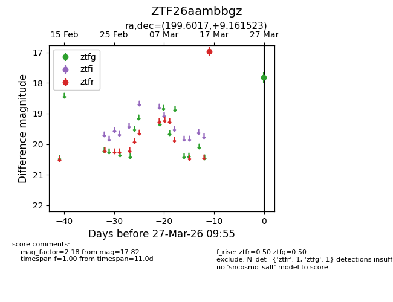
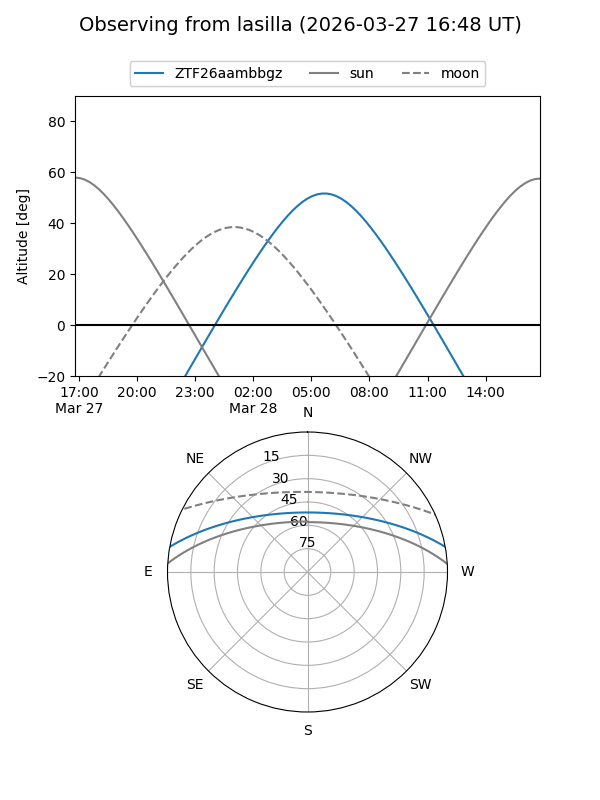
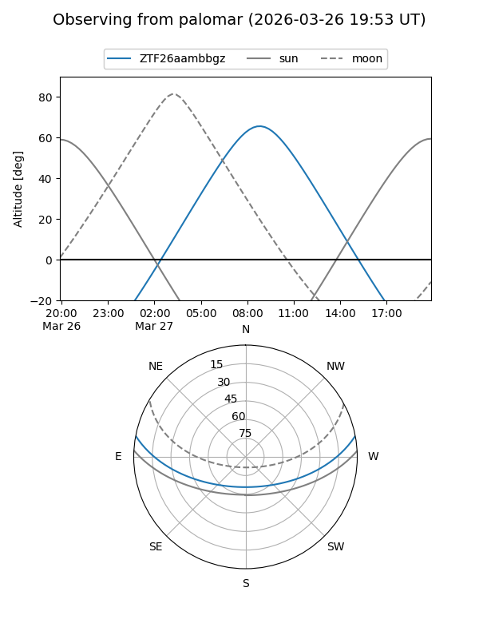

ZTF26aambbgz
Target ZTF26aambbgz at 2026-03-27 09:58
Aliases and brokers:
FINK: link
Lasair: link
ALeRCE: link
alt names
ZTF26aambbgz (ztf,fink_ztf)
Coordinates:
equatorial (ra, dec) = 199.6017,+9.16152
equatorial (HMS+DMS) = 13:18:24.41,+09:09:41.48
galactic (l, b) = (323.7177,+70.93690)
Flags:
Photometry:
last ztfg=17.82, ztfr=16.97
1 ztfg, 1 ztfr detections
Lightcurve

Visibility


Additional plots